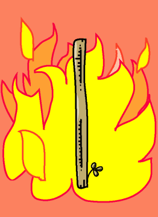

→
Damian Cugley →
Alleged Tarot 2002 →
png →
→
Damian Cugley →
Alleged Tarot 2002 →
png →
| « XXI. The World | The Two of Wands » | |
|  | ||
|
The Ace of Cups The Ace of Swords The Ace of Coins |
||
Upright: inspiration, enthusiasm, ambition
Reversed: wasted energy
Wands stand for work in the sense of enthusiasm, creative labour and organization. This made sense to me when I thought of wands as suggesting various sorts of tool. The Ace of Wands often represents beginnings and new enterprises.
The suit of Wands is also associated with the element of fire, which is why I have given this card a fiery background. The little sprig of leaves at the bottom of the wand serves two purposes: it symbolizes new beginnings (as this is an Ace), and it reminds us of the suit of Clubs in modern playing cards. (Older decks tend to draw the Wands as more literally club-like.)
See also the description on the Queen of Pentacles Tarot site
See also Thirteen’s description on the Aeclectic Tarot site
If your browser supports SVG, then you should visit the SVG version of this page. It is so much more cool!